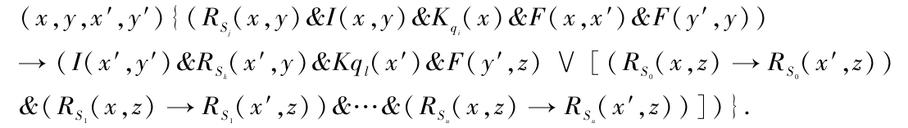
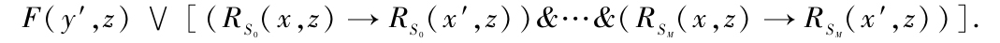
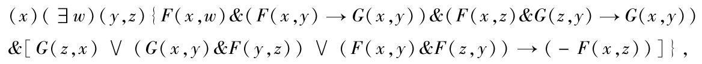
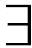
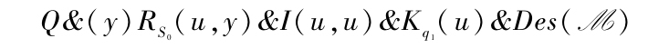
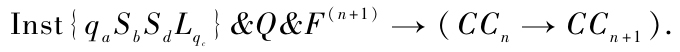
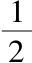
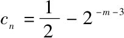
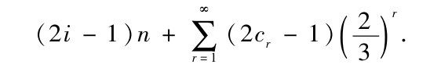

在一篇题为“可计算数及其在判定问题上的应用”[1]的文章中作者给出了“狭函项演算”的判定问题是不可解的一个证明．这个证明中包含有一些形式的错误[2]，它将在这里得到改正：在同一文章的一些语句也需要得到修改，虽然它们从含义上看其实不是错误的．
Inst{qiSjSkLql}的式子应该改为

S0，S1，…SM是M可以打印的记号．在引理1的证明中间的论断
“Inst{qaSbSdLqc}＆F（n+1）→（CCn→CCn+1）是可以证明的”
是错误的（即使使用Inst{qaSbSdLqc}的新表示式也不行）：我们不能导出Fn+1→（-F（u，u″））因此不能在Inst{qaSbSdLqc}中使用式子

为了改正这一点我们引入一个新的泛函变量
G［G（x，y）解释为x在y之前］.那么，如果Q是下式的简记号

Un（M）的正确公式应为
（

u）A（M）→（s）（t）RS＜sub＞1＜/sub＞（s，t），其中A（M）是

的简记号．
在引理1的证明中间的论断就可以写成

而倒退6行的几个式子就变成
r（n，i（n））=b， r（n+1，i（n））=d， k（n）=a，k（n+1）=c，
在引理1之前谈到的逻辑和式就理解为“合取式”．经过这些改善，证明就成立了．Un（M）可以成为写成引理2给出的式子（I），n=4的情形．
在第3节之前所定义的可计算数给这里产生了困难．如果可计算数要满足一些直观的要求，我们就有：
可以给出一个，在普通数学标准下是正确的，对以上论断的证明．但是其中用到排中律原则．另一方面，下面的论断是错误的：
（B）是错误的，至少如果我们采用m/2n将总是以0结尾的惯例，可以这样地看出：设N是一个机器，并且定义cn如下：如果N在达到第n个完整配置时没有打印0，cn=

；如果N在达到第m个完整配置时打印0并且m≤n，那么
．令an=cn-2-n-2，bn=cn+2-n-2.那么（A）的不等式得到满足，并且如果N在什么时候打印0，α的第一个数字是0；反之，这个数字就是1.如果论断（B）成立，我们就有办法找到N的D.N.的第一个数字α：也就是说，我们就可以确定N是否打印0，与第8节所引用的文章产生矛盾．所以虽然（A）指出存在机器计算（譬如说）欧拉常数，我们现在不能描述任何这样的机器，因为我们还不知道欧拉常数是否具有m/2n形式．这种不协调的情况可以用改善的方法来避免，其中可计算数联系着可计算序列，可计算数的整体放在那里不去改动，可以用很多方法来做出[3]，这里是一个例子．假设一个可计算序列γ的第一个数字是i，它的后面是n个重复的1，然后是0，并且最后是一个第r个数字是cr的序列，那么序列γ是对应于实数

如果计算序列γ的机器也同时看成是计算这个实数，那么（B）成立．用序列来代表实数的唯一性不复存在，但是这并不重要，因为无论如何D.N.在任何情况下都不是唯一的．
美国新泽西州普林斯顿大学研究生院
（罗里波 译）
[1]Proc.London Math.Soc.（2），42（1936-7），230-265．
[2]作者感谢贝尔奈斯指出这个错误．
[3]这种使用交叠区间来定义实数的方法最早出自布劳威尔．